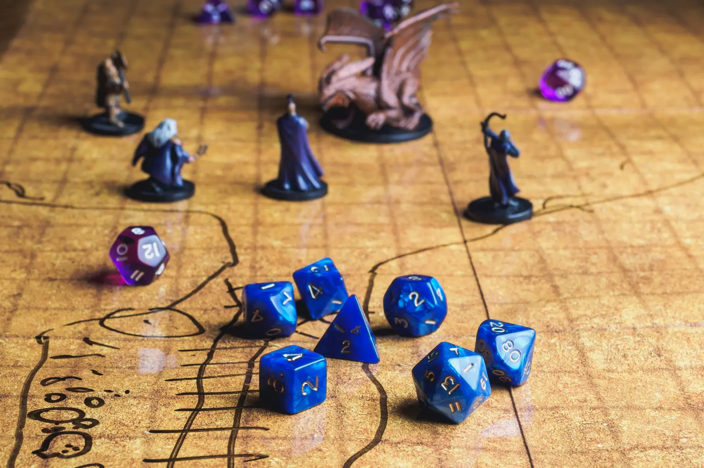

Magic: The Gathering is a trading card game developed by Wizards of the Coast in 1993. It is a card game loved by many, including Joey, for the strategy and community around it. With each ever-expanding set, it gets more complicated, and he very much enjoys the challenge of using old cards with new ones. Joey occasionally goes to local game stores for challenges on Sunday Afternoons or on a work lunch break!
Dungeons and Dragons is an ever-creative and original game where people can roleplay and be creative in building a world and character of their own imagination. It allows full freedom in play as far as allowed. He likes to flex his storytelling and world-building skills to create enjoyable experiences to share with friends and family. The ideas don’t stop flowing; even while at work, he carries a notebook full of ideas and storylines to be fleshed out

Writing is one of the most fundamental forms of self-expression and a way of sharing information. With all media circling around it, Joey uses it as a form of practice for both his hobbies and his goals. While short stories can be a challenge, he is looking to make a book and D&D campaign where word choice and storytelling are critical.